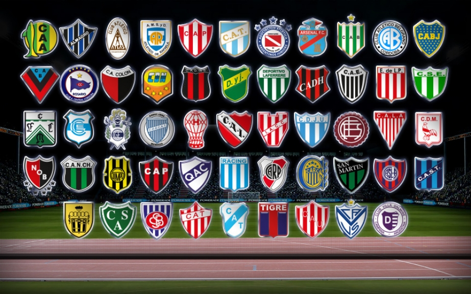
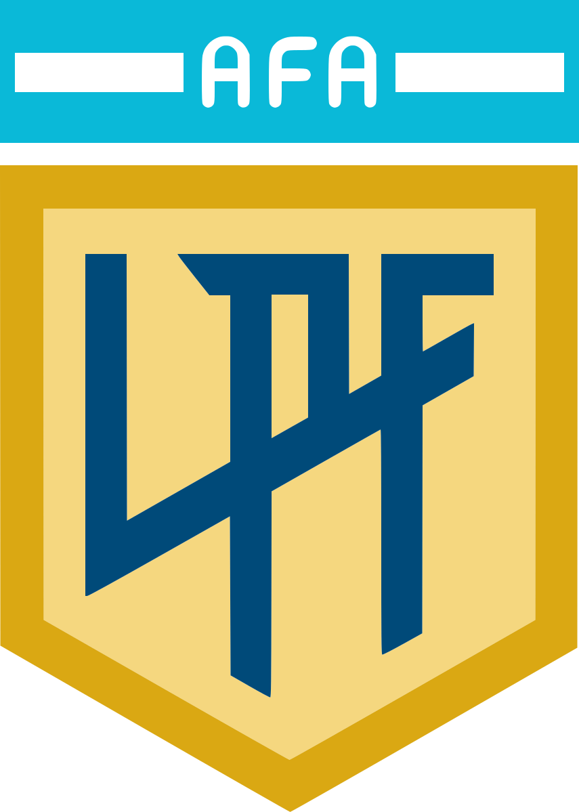
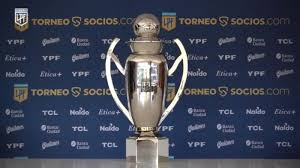
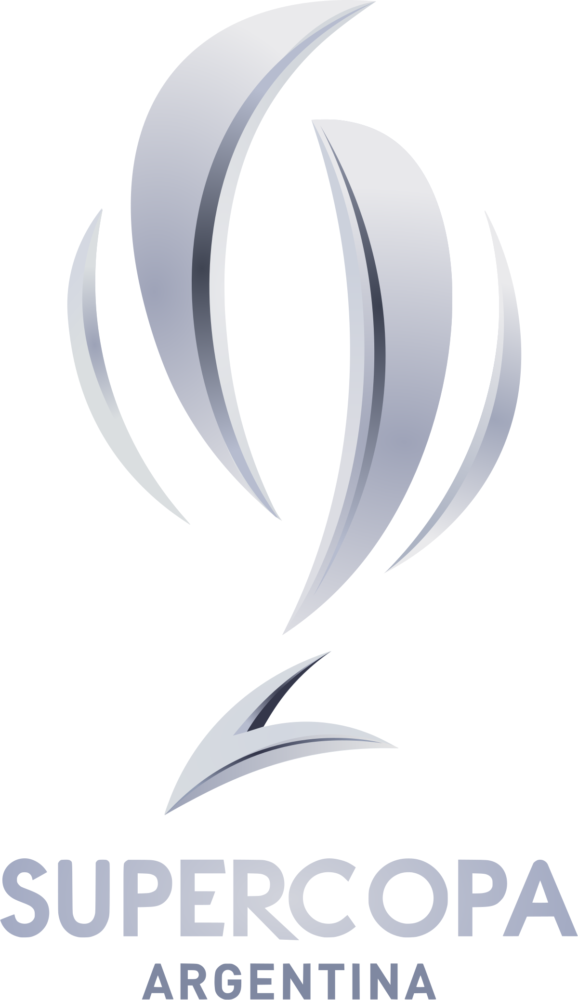

Torneos del fútbol argentino
El fútbol argentino se estructura en múltiples torneos oficiales que conforman un sistema competitivo apasionante y dinámico, reconocido por su intensidad, su historia rica y la pasión inigualable de sus hinchas. No se trata solo de quién gana o asciende: cada torneo representa una tradición, una oportunidad para mostrar talento local y un reflejo del carácter federal del deporte en el país.
Desde la prestigiosa Liga Profesional de Fútbol, donde compiten los clubes más poderosos del país, hasta la vibrante y muchas veces impredecible Copa Argentina, el calendario futbolístico argentino ofrece acción durante todo el año. A eso se suma el sistema de ascensos y descensos, que permite a los clubes de categorías menores soñar con llegar a la elite, y que mantiene el nivel de competitividad alto en cada partido, sin importar la división.

Liga Profesional de Fútbol (LPF)
Es la principal categoría del fútbol argentino. Participan 28 equipos en un formato de todos contra todos. Los partidos se disputan de viernes a lunes y cuentan con transmisiones en vivo y análisis táctico semanal. River y Boca lideran el historial de títulos.

Copa de la Liga Profesional
Es un torneo que se juega en el primer semestre del año, dividido en dos zonas. Clasifican los mejores de cada zona a una fase final de eliminación directa. Ha ganado importancia por su impacto en las clasificaciones internacionales.

Primera Nacional
Segunda división del fútbol argentino. Clubes tradicionales como Ferro, Quilmes o San Martín de Tucumán buscan regresar a la máxima categoría. Se juega en dos zonas con ascenso directo y repechajes.
Copa Argentina
Un torneo integrador donde participan equipos de todas las categorías, desde la Primera División hasta clubes del Federal A y B. Es conocido por sus sorpresas y cruces inolvidables. El campeón obtiene una plaza en la Copa Libertadores.
Supercopa Argentina
Enfrenta al campeón del torneo de liga con el de la Copa Argentina. Es un partido único que define un nuevo título nacional. River y Boca son los máximos ganadores desde su creación.
